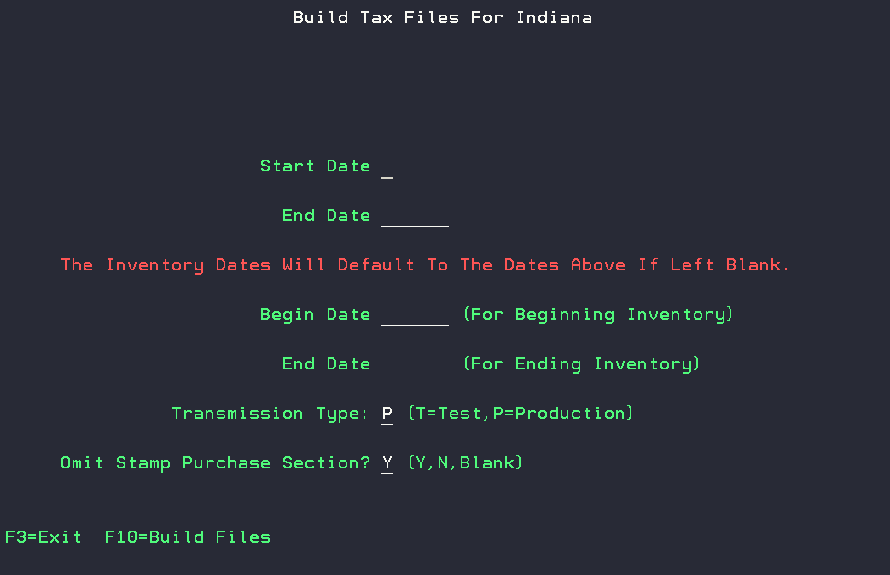

DAC State Tax Reporting Modules¶
State Reporting¶
Alabama Tax Reporting¶
AL Files Created¶
The following files are created in CV1COM:
AL- Alabma, YY- Year, MM- Month
- Schedule D Participating - ALYYMM.CSV
- Schedule D Non-Participating - ALYYMMNP.CSV
- Sales to National Guard - ALYYMMP3.CSV
- Sales to US Government - ALYYMMP4.CSV
- Sales to Indian Reservations - ALYYMMP5.CSV
- AL Tobacco Sales for Resale - ALYYMMTI.CSV
Generating AL Tax Report¶
The Alabama Tax Reporting reports can be generated from Build AL Tax File option in the State Tax Reporing Menu accessible from 6, 7, 22, 6.
Customers can be excluded from the Alabama Resale Format using F8.
AL Tax Report Setup¶
- Setup vendor group for Non-Participating Vendors to mark as non-participating. 5, 11.
- Identify Tax classes that are RYO Tobacco Items. 1, 2, 7.
- RYO items need to have ounces defined in UM1 field on those items. 1, 2, 1.
- Brand names will need to be defined or first 10 characters of the item description will be used. Brand codes can be added to an item from 1, 2, 1, and 2 to edit item, F24- Edit Item Extension. Brand codes can be created using F4 in the BRAND field, and then using F10 to Edit the Brand Master File, and F9 to go to "add" mode.
Arkansas Tax Reporting¶
AR Files Created¶
The following files are created in CV1COM:
AR-Arkansas, YY- Year, MM- Month
- Cigarette and Tobacco File - AAYYMM.CSV
| Information included in report | ||
|---|---|---|
| Permit Number | Zip Code | Product Type |
| Name | Product Description | Tobacco Brand |
| Street Address | Unit | Tobacco Flavor |
| City | Quantity | Tobacco Style |
| State | Invoice Number | Package Quantity |
Generating AR Tax Report¶
The Arkansas Tax Reporting reports can be generated from Build AR Tax File option in the State Tax Reporing Menu accessible from 6, 7, 22, 11.
Setup¶
- Setup vendor group for Non-Participating Vendors to mark as non-participating. 5, 11.
- Identify Tax classes that are RYO Tobacco Items. 1, 2, 7.
- RYO items need to have ounces defined in UM1 field on those items. 1, 2, 1.
- Brand names will need to be defined or first 10 characters of the item description will be used. Brand codes can be added to an item from 1, 2, 1, and 2 to edit item, F24- Edit Item Extension. Brand codes can be created using F4 in the BRAND field, and then using F10 to Edit the Brand Master File, and F9 to go to "add" mode.
Florida Tax Reporting¶
FL Files Created¶
The following files are created in CV1COM:
FL-Florida, YY- Year, MM- Month - Single record format - FLYYMMDD.CSV - Multiple record format - FLYYMM.TXT Version determined by system option
Generating FL Tax Report¶
The Florida Tax Reporting reports can be generated from Build FL Tax File option in the State Tax Reporing Menu accessible from 6, 7, 22, 19, 4.
You can use F8 to add Entity ID's by customer.
FL Tax Report Setup¶
Georgia Tax Reporting¶
GA Files Created¶
The following files are created in CV1COM:
GA- Georgia, YY- Year, MM- Month - Cigarette and RYO Tobacco Sales - GAYYMM.CSV
| Information included in report | ||
|---|---|---|
| MFG # | Customer Number | State |
| MFG Name | Customer Name | Invoice Number |
| Brand | Address | Cigarette Sticks |
| Date Sold | City | RYO Units |
Generating GA Tax Report¶
The Georgia Tax Reporting reports can be generated from Build GA Tax File option in the State Tax Reporing Menu accessible from 6, 7, 22, 5.
GA Tax Report Setup¶
Iowa PACT ACT Tax Reporting¶
IA Files Created¶
The Iowa Pact Act Tax file generates 2 files for cigarette and tobacco sales data in the root directory: - Detail- ################.DTL - Header- ################.HDR
Generating IA Tax Report¶
The Iowa Tax Reporting reports can be generated from Build IA/IL PACT Act File option in the State Tax Reporing Menu accessible from 6, 7, 22, 9.
Additional items can be defined on the report with the F8 option.
IA Tax Report Setup¶
Illinois Cigarette Tax Reporting¶
IL Cigarette Files Created¶
The following files are created in CV1COM: - Illinois Cigarette Data file - ILCIGS.DAT
Generating IL Cigarette Tax Report¶
The Illinois Tax Reporting reports can be generated from Build IL Tax File option in the State Tax Reporing Menu accessible from 6, 7, 22, 4.
Additional items can be defined on the report with the F8 option.
Illinois Tobacco Tax Reporting¶
IL Tobacco Files Created¶
The following files are created in ILTAX folder: - Illinois Tobacco Data file - TP-1-IL.CSV
Generating IL Tobacco Tax Report¶
The Illinois Tobacco Tax Reporting reports can be generated from Build Illinois TP-1-IL File option in the State Tax Reporing Menu accessible from 6, 7, 22, 19, 19, 3. You can use F8 to define the tax jurisdiction cross reference.
Illinois PACT ACT Tax Reporting¶
IL PACT ACT Files Created¶
The Illinois PACT ACT Tax Report generates 2 files for cigarette sales data in the root directory: - Detail- ################.DTL - Header- ################.HDR
Generating IL PAC ACT Report¶
The Illinois Tax Reporting reports can be generated from Build IA/IL PACT Act File option in the State Tax Reporing Menu accessible from 6, 7, 22, 9. You will need to update the state field prior to running the report.
Additional items to report can be added with the F8 option.
Indiana Tax Reporting¶
IN Files Created¶
The following files are created for Cigarette and Tobacco in INTAX folder:
- CIGCT19.CSV
- CIGCT19.XML
- CIGMTSI.CSV
- CIGMTS2.CSV
- CIGMTS3.CSV
- CIGNRM.XML
- OTPCT19.CSV
- OTPCT19.XML
- OTPMTSI.CSV
- OTPMTSI.XML
Generating IN Tax Report¶
The Indiana Tax Reporting reports can be generated from Build KY Tax File option in the State Tax Reporing Menu accessible from 6, 7, 22, 19, 6.

The first start and end dates are for the data as well as a start and end date for including inventory. You also have the ability to omit stamp purchases by updating the field to 'N'.
Kentucky Tax Reporting¶
KY Files Created¶
The following files are created for Cigarette and Tobacco in the KYTAX folder:
These files can be copied to the KDOR_Cigarettes and the KDOR_Tobacco templates
- Cigarette Inventory Adjustments - CIGINVAJ.CSV & CIGINVAO.CSV
- Beginning Inventory - CIGINVB.CSV
- Ending Inventory - CIGINVE.CSV
- Cigarette Purchases - CIGSAPU.CSV
- Stamp Purchases - STAMPPUR.CSV
- Tobacco Purchases -TOBSAPU.CSV
Generating KY Tax Report¶
The Kentucky Tax Reporting reports can be generated from Build KY Tax File option in the State Tax Reporing Menu accessible from 6, 7, 22, 19, 9.
Tax Jurisdiction Cross Refrence can be defined with option F8.
Louisiana Tax Reporting¶
LA Files Created¶
The following files are created for Cigarette and Tobacco in the LATAX folder:
These files can be copied to the LaTAP_Tobacco_Tax_template file
- Cigarette and RYO Sales - CIGRYOSA.CSV
- Cigarette and Tobacco Purchases - CIGTOBPU.CSV
- Cigarette and Tobacco Credits - CIGTOBCR.CSV
Generating LA Tax Report¶
The Louisiana Tax Reporting reports can be generated from Build LA Tax File option in the State Tax Reporing Menu accessible from 6, 7, 22, 19, 7.
You have the ability to enter Manufacturer Returns with the F8 option.
Michigan Tax Reporting¶
MI Files Created¶
The following files are created for Cigarette and Tobacco in the MITAX folder:
- Cigarette Purchases (Receipts) in Michigan - C101A.CSV
- Cigarette Purchases (Wholesalers or Secondary Wholesalers Only) - C101B.CSV
- Returned Stamped (Tax-Paid) Cigarettes from Michigan Customers - C101C.CSV
- Out-of-State Cigarette Shipments (Michigan Based Licensees Exports Only) - C103.CSV
- Cigarette Sales in Michigan from Tax-Unpaid Inventory - C108B.CSV
- Cigarette Sales from Tax-Paid Inventory - C108C.CSV
- Tax-Unpaid Other Tobacco Product Purchases for Michigan (Michigan Based Licensees Only) - T101A.CSV
- Tax-Paid Other Tobacco Product Purchases (Wholesalers Only) - T101B.CSV
- Tax-Paid Other Tobacco Product from Michigan Customers - T101C.CSV
- Out-of-State Other Tobacco Product Shipments (Michigan Based Licensees Exports Only) - T103.CSV
- Tobacco Product Sales in Michigan from Tax-Unpaid Inventory - T108B.CSV
- Other Tobacco Product Sales from Tax-Paid Inventory - T108C.CSV
Generating MI Tax Report¶
The Michigan Tax Reporting reports can be generated from Build MI Tax File option in the State Tax Reporing Menu accessible from 6, 7, 22, 19, 2.
The Cigarette or Tobacco files can be generated with the Tax type 'C' for Cigarettes or 'T' for Tobacco.
Missouri PACT ACT Tax Reporting¶
MO Files Created¶
The following files are created for Cigarette and Tobacco in the CV1COM folder:
- Cigarettes - MOPACTCG.CSV
- Tobacco- MOPACTTB.CSV
Generating MO Tax Report¶
The Missouri PACT ACT Tax Reporting reports can be generated from Build MO PACT ACT File option in the State Tax Reporing Menu accessible from 6, 7, 22, 19, 3.
New York Tax Reporting¶
NY Files Created¶
A single file is created for Cigarette and Tobacco sales in the CV1COM folder:
- NYDATA.TXT
Generating NY Tax Report¶
The New York Tax Reporting reports can be generated from Build NY Tax File option in the State Tax Reporing Menu accessible from 6, 7, 22, 3.
Ohio Tax Reporting¶
Tax Reporting¶
The following files are created for Cigarette and Tobacco Sales and Purchases in the OHTAX folder:
- CIGS##########WH1.TXT
- OTP#########.TXT
The Ohio Tax Reporting reports can be generated from Build OH Tax File option in the State Tax Reporing Menu accessible from 6, 7, 22, 19, 2.
You have the ability to enter Manufacturer Returns with the F8 option.
Out-of-state Tax Reporting files will generate when using the 'N' option for the "In State Distributor" field.
Out Of State Cigarette Sales Reporting¶
The following files are created for Cigarette and Tobacco Sales and Purchases in the DACEMAIL folder:
XX = State Abbreviation
- XXCIGSLS.CSV
The Ohio Out of State Cigarette Sales Reporting reports can be generated from Build OH Out of State Cigarette Sales option in the State Tax Reporing Menu accessible from 6, 7, 22, 19, 19, 2.
Oklahoma Tax Reporting¶
OK Files Created¶
The following files are created for Cigarette and RYO Tobacco Sales in the CV1COM folder:
OK-Oklahoma, YY- Year, MM- Month
- OKYYMM.CSV
Generating OK Tax Report¶
The Oklahoma Tax Reporting reports can be generated from Build OK Tax File option in the State Tax Reporing Menu accessible from 6, 7, 22, 10.
Out-of-state Tax Reporting files will generate when using the 'N' option for the "In State Distributor" field.
Oregon Tax Reporting¶
OR Files Created¶
The following files are created for Tobacco Sales and Purchase in the DACEMAIL folder:
The .PDF files are automatically emailed
- ORSCH1A.CSV
- ORSCH1A.PDF
- ORSCH2A.PDF
- ORSCH3A.PDF
- ORSCH4A.PDF
- ORSCH5A.PDF
- ORSCH6A.PDF
- ORSCH7A.PDF
- ORSCH8A.PDF
Generating OR Tax Report¶
The Oregon Tax Reporting reports can be generated from Build OR Tax File option in the State Tax Reporing Menu accessible from 6, 7, 22, 19, 8.
Pennsylvania Tax Reporting¶
PA Tax Reporting¶
PA Files Created¶
The following files are created for Cigarette and Tobacco Sales and Returns in the PATAX folder:
- DAS-95.CSV - Details For DAS-95
- REV1042E.CSV - In State ECIGS-Distributors
- REV1042R.CSV - In State RYO-Distributors
- REV1042S.CSV - In State Smokeless-Distributors
- REV1142.CSV - Unstampable LittleCigars In PA
- REV1163.CSV - Cigarette Sales Into PA-PACT ACT
- REV1164.CSV - Tobacco Sales Into PA-PACT ACT
- REV1808.CSV - In State RYO Sales-NPM
- REV1808D.CSV - Details For In State RYO Sales-NPM
- REV679A.CSV - In State Smokeless-Retailers
- REV679B.CSV - In State RYO-Retailers
- REV679C.CSV - In State ECIGS-Retailers
- REV679DE.CSV - Out Of State ECIGS-All Custs
- REV679DR.CSV - Out Of State RYO-All Custs
- REV679DS.CSV - Out Of State Smokeless-All Custs
- REV679EE.CSV - Products Returned To MFR-ECIGS
- REV679ER.CSV - Products Returned To MFR-RYO
- REV679ES.CSV - Products Returned To MFR-Smokeless
Generating PA Tax Report¶
The Pennsylvania Tax Reporting reports can be generated from Build PA Tax File option in the State Tax Reporing Menu accessible from 6, 7, 22, 19, 1.
You have the ability to add vendors to the DAS-95 file with the F8 option.
PA Consolidated Cigarette Files¶
PA Consolidated Files Created¶
The following files are created for Cigarette and Tobacco Sales and Returns in the PATAX folder:
- CIGCONS.CSV
- CIGINV.CSV
Generating PA Consolidated Cigarette Report¶
The Pennsylvania Consolidated Cigarette Files can be generated from Build PA Consolidated Cigarette Files option in the State Tax Reporing Menu accessible from 6, 7, 22, 19, 19, 1.
You have the option to enter Manufacturer Returns to the file with the F7 option.
Tennessee Tax Reporting¶
Tennessee LDR Tax Reporting¶
TN LDR Files Created¶
A single file is created for the LDR Report in the CV1COM folder:
- TNLDRV2.CSV
Generating TN LDR Tax Report¶
The Tennesse LDR Tax Reporting files can be generated from Build TN Tax File option in the State Tax Reporing Menu accessible from 6, 7, 22, 7.

Version 2- LDR must be selected for creating the LDR version of the files.
Out-of-state Tax Reporting files will generate when using the 'N' option for the "In State Distributor" field.
You have the ability to Define LDR State Manufacturers with the F18 option.
Setup for TN LDR Tax Reporting¶
Needed PTF's for setup: PTF13060, PTF12801.
System Option SYS045 will also need to be updated TN LDR: SEND ONLY TN SALES set to YES. LIMIT DATA SENT FOR TN LDR set to YES. (OPTIONAL) TN LDR: RETURNS AFFECT STAMPING
- You must define the tax classes with a TAX TYPE "T": 1, 2, 7.
- You must define the state brand codes. This information is supplied from the state of TN. The state brand codes must tie to a valid brand code assaigned to the item. Use 1, 2, 20, 10 to edit State Brand Codes.
- Assaign brand codes to items. Use 1, 2, 1 Work With Items, Use a 2 to edit the item, and use F24 for Extended Item Information and F4 on the BRAND field to assign the Item Brand Code.
- You must define the appropriate vendors with their Tennessee Manufacturer IDs. This information can be acquired from your contact with the state of TN. From the main DAC menu: 6, 7, 22, 7 - Build TN Tax File Use F18 to add records.
- Create the LDR Tax File from 6, 7, 22, 7, and using VERSION 2. You must enter the warehouse code, dates for invoices, as well as dates for inventory. Enter the applicable value for IN STATE DISTRIBUTOR. The file TNLDRVR.CSV can be found in CV1COM folder.
Tennessee RAP Tax Reporting¶
TN RAP Files Created¶
A single file is created for the RAP Report in the CV1COM folder:
- TNTAXF.CSV
Generating the TN RAP Report¶
The Tennesse RAP Tax Reporting files can be generated from Build TN Tax File option in the State Tax Reporing Menu accessible from 6, 7, 22, 7.
Version 1- RAP must be selected for creating the RAP version of the files.
Out-of-state Tax Reporting files will generate when using the 'N' option for the "In State Distributor" field.
You have the ability to Define Items for RAP with the F8 option.
Setup TN RAP Tax Reporting¶
Once the TN Reporting module is activated (DAC003 TN Reporting Active= 1), You will need to define the Distributor ID for TN in SYS054: Distributor ID for TN.
Setup TN Items for RAP reporting from 6, 7, 22, 7, F8.
Setup NACS Categories from 10, 2, 9, Work with NACS Categories.
Tennessee PACT ACT Reporting¶
TN PACT ACT Files Created¶
A single file is created for the Tennessee Pact Act in the CV1COM folder:
- TNPACTV2.CSV
Generating TN PACT ACT Report¶
The Tennesse PACT ACT Reporting files can be generated from Build TN Tax File option in the State Tax Reporing Menu accessible from 6, 7, 22, 8.
Setup TN PACT ACT Reporting¶
Texas Tax Reporting¶
TX Files Created¶
A single file is created for Cigarette and Tobacco Sales in the CV1COM folder:
- TXTAXF.DAT
Generating TX Tax Report¶
The Texas Tax Reporting files can be generated from Build TX Tax File option in the State Tax Reporing Menu accessible from 6, 7, 22, 1.
You have the ability to Edit Non-participating Vendors with the F9 option.
Virginia PACT ACT Tax Reporting¶
VA Files Created¶
The Viginia PACT ACT Tax Report is a single printed report with the filename:
- HWM7PFR$
Generating VA Tax Report¶
The Viginia PACT ACT Tax Report can be generated from Print VA PACT Act Report option in the State Tax Reporing Menu accessible from 6, 7, 22, 19, 11.
Washington Tax Reporting¶
WA Files Created¶
The following files are created for Cigarette and Tobacco Sales in the WATAX folder:
- Cigarettes - WACIG.CSV
- RYO - WARYO.CSV
- Smokeless - WASMKLES.CSV
Generating WA Tax Report¶
The Washington Tax Reporting reports can be generated from Build WA Tax File option in the State Tax Reporing Menu accessible from 6, 7, 22, 19, 10.
Out-of-state Tax Reporting files will generate when using the 'N' option for the "In State Distributor" field.
Wisconsin Tax Reporting¶
WI Files Created¶
The following files are created for Cigarette and Tobacco Sales in the WITAX folder:
- Cigarettes - CIGMMYY.CSV
- Tobacco - TOBMMYY.CSV
Generating WA Tax Report¶
The Wisconsin Tax Reporting reports can be generated from Build WI Tax File option in the State Tax Reporing Menu accessible from 6, 7, 22, 19, 5.
Out-of-state Tax Reporting files will generate when using the 'N' option for the "In State Distributor" field.
You have the ability to Edit Vendor Info with the F8 option. You can edit the vendor name with option F18.
System Options¶
Common System Options¶
SYS054


SYS070